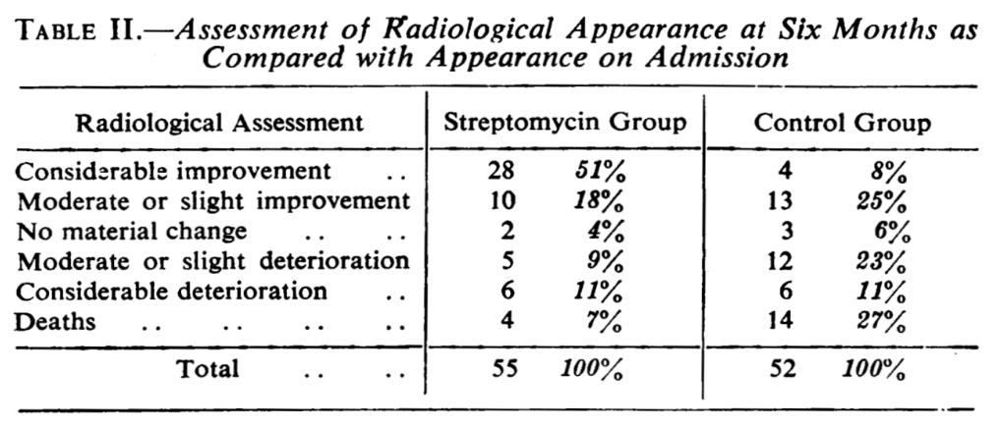
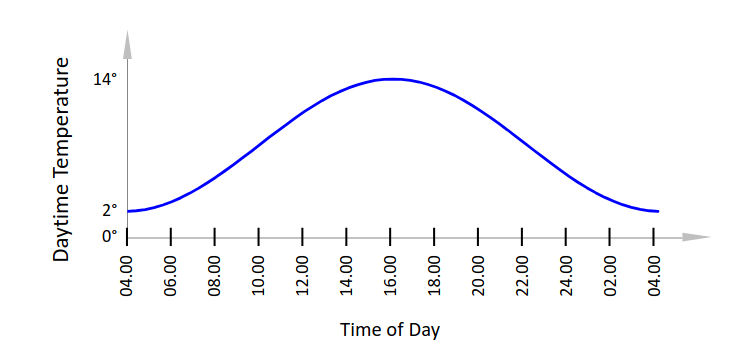

Sir Austin Bradford Hill, called Tony Hill, (* July 8, 1897 in London; † April 18, 1991) was a British epidemiologist, statistician and pioneer of clinical trials. Together with Richard Doll, he was the first to establish a relation between smoking and lung cancer. In 1948, Hill published the results of a study1 he had conducted on the treatment of tuberculosis with the antibiotic streptomycin. Have a look at Table II from the publication and discuss a possible research design that Hill may have chosen and the results of the study.

Study Table
Answer
Bradford and Doll may have used an experimental study design with randomization and Blinding to ensure the most authentic results.
Task 02
Confounding means that a factor (confounder) that is not directly investigated is associated with both the independent variable and the dependent variable and accordingly causes the relationship between the two variables (Spurious Correlation). Given the definition above, interpret the following three statements
Answer
The more firefighters fight a fire, the greater is the damage: We look at this statement in the wrong direction. The greater the damage (caused by a big fire), the more fire fighter are necessary to extinguish a fire.
The fewer storks nest in an area, the lower the human birth rate is in that area: No, smaller areas provide less space for humans and storks, which can cause fewer stork nests and lower birth rate
The more books a family owns, the better the children are able to read: Maybe, but it’s manly cause by the level of education instead of the number of book. Educated families are more likely to own more books than less educated families.
Tasks for Exercise 02: Principles
Task 01
Which study design would you choose?
Description of the study – summary
Research question: Which title for the quarterly newsletter for current customers (made at least one purchase) will increase the open rate? There are three versions for the newsletter: The current title, a title that announces a competi- tion, and a title that announces a gift. The mailing list has approx. 12,000 customer names.
Answer
We are going to run a experimnet. We can allocaed the suer randomly. So we use a A/B test, RCT with 3 versions.
Description of the study – summary
In an article the newspaper «Blick» wants to know how its readers are doing. Readers interested in the question can access this page with one click
Answer
We run an observation. Without group comparison. So we use a Descriptive Study -> Survey Study.
Description of the study – summary
Swisscom is updating its «TV Air» browser for laptops and desktops. Three weeks after the release, it evaluates the user responses by the «community». The responses are divided into «satisfied users» and «unsatisfied users.» Their profiles make it possible to extract the following information, among other things: Browser type, operating system, download speed.
Answer
We run an observation. In this cas with group comparison. So we use a Analytical Study -> Case Study.
Task 02
A study will be conducted to answer these research questions:
Do different language learning media affect the intensity of situational interest of two-year-old children?
How do different language learning media affect vocabulary growth?
Does adult company while using language learning media have an impact on vocabulary growth?
These two language learning media are in focus:
App for learning vocabulary
Viewing of picture cards
Which study type would you choose? In which areas of empirical research would you situate the study?
Answer
To answer the research questions, we will run an experiment. We randomly allocated the users to the different learning media. So we run randomized controlled (suitable for hypothesis testing).
Tasks for Exercise 03: Introduction to Design of Experiments (DoE)
Task 01
A study on sustainable development focuses on measuring climate data at a specific location. Among other things, the daytime temperature on a winter day is recorded over a period of 24

Daytime Temp
Two independent research teams, A and B, conduct temperature measurements. In retrospect, it turns out that the thermometers were defective: Team A: Thermometer always measures 6° C, regardless of actual temperature. Team B: Thermometer consistently measures 2° C too high. The research teams do not know that the thermometers are defective. Which research team delivers the “better” measurement results?
Answer
On the one hand, we could argue that Team B delivers ‘better’ results than Team A, as Team B can still identify a global pattern in their data. Conversely, Team A’s results would produce a straight line in the plot, indicating a measurement error. Team A would be much more likely to detect the error than Team B.
Task 02
Show how variance can be maximized, controlled and minimized in the following descriptions of studies. First determine the relevant variables:
Dependent variable (DV)
Central independent variable(s) (IV)
Nuisance variables
Description of the study – Summary
Research question: What title for a quarterly newsletter to existing customers (who have made at least one purchase) will increase the open rate? There are three title variations: The current title, a title that announces a competition, and a title that announces a gift. The mailing list has approx. 12,000 customer names.
Answer
How can primary variance be maximized?: Use 3 distinct title variations.
How can secondary variance be controlled?: Random allocate the customers to the the variants.
How can error variance be minimized?: Use all possible customers.
Description of the study – Summary
Research question: Can tuberculosis be cured by treating patients with the antibiotic streptomycin? Two groups of patients are planned: Treated (Streptomycin) vs. Control (No treatment). The total sample size includes 100 patients
Answer
How can primary variance be maximized?: The two manifestations of the central independent variable maximize “automatically” the primary variance as much as possible, since they are predetermined.
How can secondary variance be controlled?: Random allocate the patients to one of the groups.
How can error variance be minimized?: Increase the sample size
Tasks for Exercise 04: Properties of DoE
Task 01
Compare the descriptions and the advantages and disadvantages of the following DoE types.
Answer
Trial and error
Description: Combination of parameters have no structure and are mixed randomly.
Advantages: Easy to implement und run.
Disadvantages: No idea what factors influence how.
One-factor-at-a-time (OFAT)
Description: Vary the first factor and then measure fuel consumption. Keep the setting with the lowest consumption and then vary the next factor.
Advantages: Easy to implement and run
Disadvantages: Interaction between factors are not recognized. Research question is answered neither systematically nor exhaustively.
Full factorial design – e.g. 2k factorial design
Description: Two levels (+/-) are defined per factor. All possible combinations of factor levels are varied.
Advantages: All main effects and all interactions can be determined. Can be used as a screening experiment to identify potentially important variables.
Disadvantages: he effort involved increases rapidly as the number of factors increases. Each additional factor doubles the number of combinations.
Task 02
Develop two experiments, A and B, with these features
Experiment A → External and internal validity are both minimal
Experiment B → External and internal validity are both maximal
Explain your choice.
Answer
Experiment A
Description: Exists when changes in dependent variables (DV) are attributed to independent variables (IV). Increases with decreasing impact of nuisance variables.
Explanation: Laboratory Study
Experiment B
Description: Exists when experimental results from a sample can be generalized to the entire population. Increases with increasing naturalness.
Explanation: Field Study
Tasks for Exercise 05: Sampling
Task 01
You want to conduct a survey that involves all residents of the city of Zurich. Discuss the criteria you would choose in order to define the population
Answer
In terms of geographical aspects: Only involving all residents of the city of Zurich.
In terms of temporal aspects: Only residents of the city of Zurich (e. g. no guests)
In terms of factual / content-related aspects: What happens to those who live in collective households?
Task 02
Evaluate the effect of the following sampling restrictions on the type of sampling error
Non-sampling error
Sampling error
Variability of sample means
Answer
You are using an incorrect equation to calculate the mean -> Sampling error
You are conducting a survey with a sample of n = 5 -> Sampling error
You take an online survey on cosmetic products and ask, among others, about the age of the interviewee at the beginning of the questionnaire. -> Non-sampling error
You conduct a telephone survey for a lifestyle product 20% of the 20 to 39-year-olds can no longer be reached via landline phone. -> Sampling error
The city of Zurich is conducting a study on the topic of sustainability. Attitudes towards sustainability are also surveyed in a neighborhood with high unemployment, poverty, a high proportion of illegal migrants, etc. -> Non-sampling error
A local television station conducts a telephone survey during the evening news, which is only announced in this broadcast. -> Variability of sample means
Task 03
Given is an address list address.csv Use R to draw a simple random sample with n = 50 elements from this data set. Insert also the R-code, the R-output and if necessary, R-plots in your answer.
library(readr)data <-read_csv("address.csv")data_sample <-sample(data, 50, replace=FALSE) # Take 50 random sample from dataView(data_sample)
Tasks for Exercise 06: Effect size & Power analysis
Task 01
For a research project the sample size is to be determined. In an experiment a new teaching method is to be tested against the old teaching method. The variable to be measured is the grade point average in the final exam. The project has the following characteristics
Randomized controlled trial (RCT): Compare the new teaching method against the old one
Analysis with t-test
Significance level = \(5\%\)
Cohen: Level of = \(20%\) → Power = \(1- \beta\) = \(80%\)
Important difference
From empirical studies, expert interviews, and based on theoretical considerations, a difference of one grade unit is considered to be important.
Other measurements - Validated studies have shown that the standard deviation of exam grades in a comparable population has the value \(\sigma_0 = 1.5\) grade units.
Procedure
First step Determine effect size d that is relevant for the study.
Second step How large does the total sample have to be for - significance level = 5% - power = 80% - effect size d relevant for the study
to obtain a significant t-test if the change in the grade at the final exam is in fact one grade or more? Use G*Power to calculate the sample size.
The task is the same as Task 01. Use R to determine the sample size. Describe the results – insert also the R-code, the R-output and if necessary, R-plots
The results of an RCT study are to be evaluated with an analysis of variance (ANOVA). A fictitious study on the effects of memory training serves as an example.
Dependent variable (DV): Assessment of the memory capacity on a scale of 1 to 100.
Independent variable (IV): Memory training received “Yes” or “No”. How large must the total sample be for
significance level \(\alpha\) = 5%
power = 80%
effect size medium
to obtain a significant analysis of variance? The f-value for the effect size can be found in Cohen (1992) in Table 1 – see below. Describe the results – insert also the R-code, the R-output and if necessary, R-plots.
Answer
library(pwr)alpha <-0.05beta <-0.2power <-1- betad <-0.5# From tablepwr.anova.test(f =0.25, k =2, power = power, sig.level = alpha)# n = 63.8 -> 127.6
Tasks for Exercise 08: A/B Testing
Task 01
What are the characteristics of “classical” A/B testing procedures and of the dynamic-algorithmic procedure? Please use one example for the “classical” A/B testing and one for a dynamic-algorithmic procedure and describe the advantages and disadvantages for each.
Answer
Classical A/B-Testing
A/B testing is an experiment. The research questions are applied to two (A/B) or more randomized groups. The statistical analysis is done by t-test, ANOVA and more advanced methods. Example: The aim is to determine which version achieves a better result, in terms of click-through rate etc. Two versions A and B are tested in parallel in a live environment. The generated data becomes the basis for decisions.
A/B testing ist simple to implement/run but cannot be used in all research questions. Example: For a complete website redesign (further elements have to be included). Population is unknown, sampling procedure is not suitable, sampling bias, ect. Dark / deceptive patterns are patterns of persuasion and influence. They may increase short-term gains for the provider but can harm brand image, user experience, and customer satisfaction.
Dynamic-Algorithmic
Several variants (treatments A, B, C, …) are run in parallel. The variant with the highest “success” (according to metrics) get more data traffic. Other variants are refined and tested with proportionally less traffic. Traffic allocation is continuously adjusted based on the observed success. As the test progresses, more and more information about the performance of the variants becomes available, so that the most successful variant can be identified dynamically. Th dynamic version is harder to implement and needs to run long enough.
Task 02
A multivariate test for a website was carried out. The test measured the average click rate (number of clicks on advertising banners) on a website. How do the design variants (factor IV1) affect the click rate (DV)?
DV = click rate [s] → output with metric scaling
IV1 = design variants [1,2,3] → factor with 3 levels
Use a univariate ANOVA to answer the question. Describe the results – insert also the R-code, the R-output and if necessary, R-plots. Data set: clickrate.xlsx → ILIAS → “Data Resources & R Files”
There are full factorial and fractional factorial designs. Please give one example of a full factorial design and one example of a fractional factorial design and explain the advantages and disadvantages of each.
Answer
Full Factorial
A full factorial design tests every possible combination of all factor levels. Easy to implement/run but resources intensive when increasing the factors size.
Fractional Factorial
The more factors and the more characteristics, the larger the number of groups. Provided that there are no interactions, the experiment can also be conducted successfully with a reduced number of groups. By using Latin squares or related designs, the number of groups required can be significantly reduced compared to full factorial designs.
Task 02
In the appendix of the lecture notes you will find details of a research project: First, read through all the 3 slides in the appendix. Use R to create the missing Latin square on Slide 28 and interpret its output. Use R to replicate the ANOVA shown on Slide 29 and interpret its output. Use key words to interpret the Latin square and the ANOVA.
The column names of the Latin square ([,1] [,2] [,3]) correspond to the levels of factor A. The row names of the Latin square ([1,] [2,] [3,]) correspond to the levels of factor B. The content in the cells of the Latin square (“c1”, “c2”, “c3”) correspond to the levels of factor C We can reduce the combination of experiments from 27 (Full Factorial) to 9 (Fractional Factorial).
ANOVA
library(readxl)dwelltime_Latin <-read_excel("/home/nils/dev/mscids-notes/hs25/doe/data/dwelltime_latin.xlsx")View(dwelltime_Latin)fit <-aov(DV ~factor(A) +factor(B) +factor(C), data = dwelltime_Latin)summary(fit)
There is a main effect on A, B and C. Even with p = .034 the factor C is relatively close to the significance limit of p = .050.
Tasks for Exercise 10: Large Data Quantities
Task 1
There is a distinction between made data and found data. Develop examples and explain your choices based on the distinction made data vs. found data. Estimate the size and complexity of the data set (e.g. number of variables, sub-populations).
Answer
Made data → Data is generated by researchers (“made”).
Found data → Data are obtained administratively and technically (“found”)
Task 2
When considering administrative data sets, it is necessary to take into account the proportion:
\[
f = \dfrac{n}{N}
\]
Proportion of sample size of the administrative dataset in the population Develop three typical examples that differ significantly in terms of their \(f\) proportion.
Answer
Small \(f\)
\[
f = \dfrac{100}{8000000}
\]
Do a survey and ask 100 random people in Switzerland.
Medium \(f\)
\[
f = \dfrac{1500}{3000}
\]
Do a survey and ask the half of all students at HSLU.
Large \(f\)
\[
f = \dfrac{90}{100}
\]
Do a survey and ask 90 of the top 100 clients of a KMU.
Tasks for Exercise 11: Experiments in Social Media
Task 01
Assume you are given this research question: In a month’s time, the Swiss will elect a new National Council (parliament). The 200 party seats of the parliament are currently distributed as follows: SVP 25.6% / Greens 21.0% / SP 16.8% / FDP 15.1% / CVP 11.4% / BDP 2.4% / Other 7.6% What proportions can be expected in the election of the new National Council? The research question is to be answered with data obtained from social media. Work through the following steps to design a study to answer the research question: - Choose the design - Define the population - Reflect on population bias - Determine the procedure for sampling / data collection - Implement the study - What else do you need to consider?
Create a presentation for a professional audience and explain your approach and thoughts. The main goal is to start a discussion.
Answer
Choose the design: Survey
Define the population: SoMe User over 18 with premission to vote.
Reflect on population bias: We can controll the actual age or nationality of the users.
Determine the procedure for sampling / data collection: Survey tools.
Implement the study: Run a survey by a given tool.
What else do you need to consider?: Older voters may be excluded since mostly young people use SoMe.